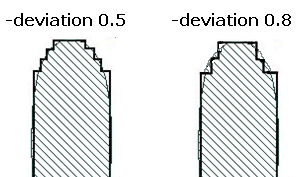

CSI
-layer input_layer_name
-layerCondition layer_condition_list
-deviation step
-layerOut csi_layer
[-markerLayer layer_name]
[-checkName cName]
[-priority cPriority]
[-comment comment_text]
[-database db_name]
CSI
-layer input_layer_name
-pdkCheckName check_template
-database db_name
[additional_options]
Generates a CSI layer containing the simplified contours from the input layer.
If used with a PDK, this function calls one of the CSI checks defined in the PDK and runs it for the specified layer.
The LFD::CSI command cannot be used with LFD::RegisterBands.
Required keyword and argument specifying the name of the layer for which the simplified contours are to be generated.
Required keyword and argument defining the process condition to be evaluated for the input layer. The layer_condition_list must be an ordered list, with 3, 4, 5, 6, 8, or 10 elements defining an explicit process condition. The list must be supplied as follows:
{optical1 dose1 size1 [resist1 etch1] [optical2 dose2 size2 [resist2 etch2]]}
These values define a process condition that is one of the conditions evaluated by the LFD::PVband command for the input layer.
Alternatively the layer_condition_list must be an ordered list with two elements defining the edges of a PV-band which was registered using the RegisterBands command. The first element can be either “max” or “min” (to define the max or min displacement for the PV-band), and the second element is an integer defining the subwindow of interest.
Required keyword and argument specifying the step size to use for the simplified contour. A smaller deviation step results in a finer simplification.

Required keyword and argument specifying a name for the layer to contain the simplified contours.
Optional keyword and argument used to constrain the check to those contours that lie within polygons on layer_name. The function ignores areas outside polygons on this layer.
A -layerOut layer or a derivation of a -layerOut layer should not be used as the input to ‑markerLayer, or a circular layer definition results.
Optional keyword and argument specifying the name to use for the check in the RDB. If not specified, the check in the RDB is assigned a system-generated name. Use this keyword to avoid name collisions when performing multiple checks of this type.
Optional keyword and argument specifying a priority for this check.
Optional keyword and argument used with -database for defining the comment text to be reported in the RDB if the check encounters a violation of this type. There is no default value for this argument.
The comment_text must be a single string, so comments containing spaces must be enclosed in braces. For example:
-comment {This is my comment.} Optional keyword and argument defining the RDB to which the contours generated by the check are written.
Required keyword and argument specifying the name of the check template defining which adjusted contour to simplify and the settings to use for the simplification.
Optional keywords and arguments allowed only when the security settings within the PDK permit you to modify the settings for this command. These can be any of the options for the non-PDK CSI command. Any additional options specified overrides the options defined within the PDK.